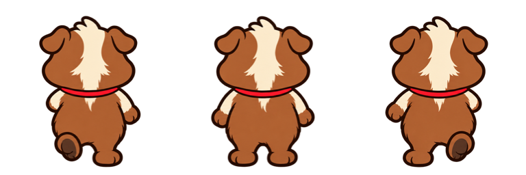
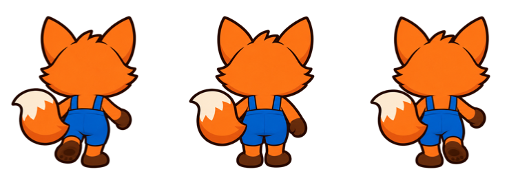

Versión anterior. Ver pelaje liso y cola centrada en la revisión actual.
Espaldas corregidas
Comparación del ciclo anterior con las poses nuevas, a la cadencia del juego.
Cuy
Nuca y orejas traseras, dorso marrón y cinta del pañuelo sin el nudo frontal.
Zorro
Cola al mismo lado y unida a la cadera; tirantes y cintura vistos por detrás.
Cuadros integrados


Las vistas de frente y de lado y las expresiones conservan sus píxeles originales.